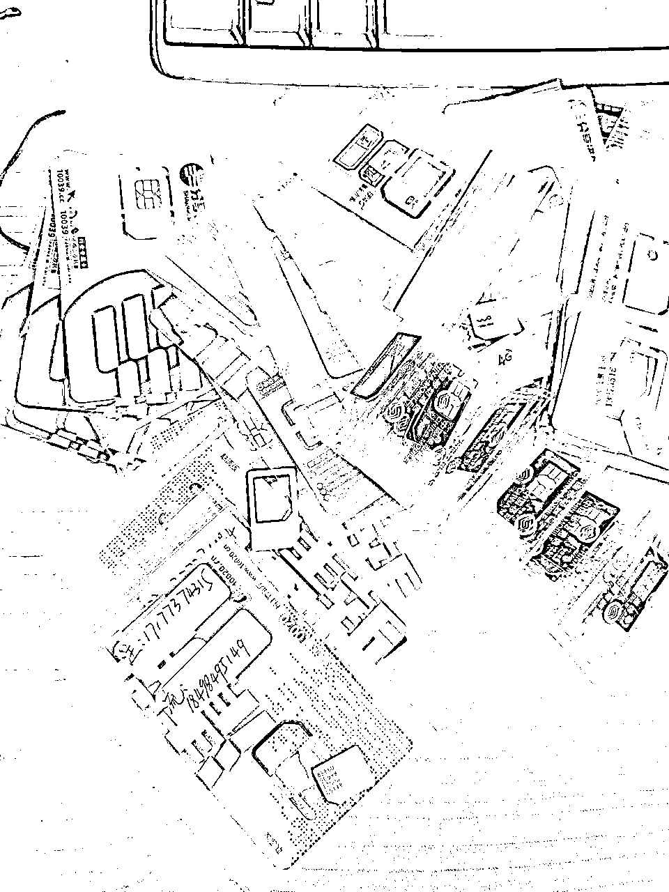
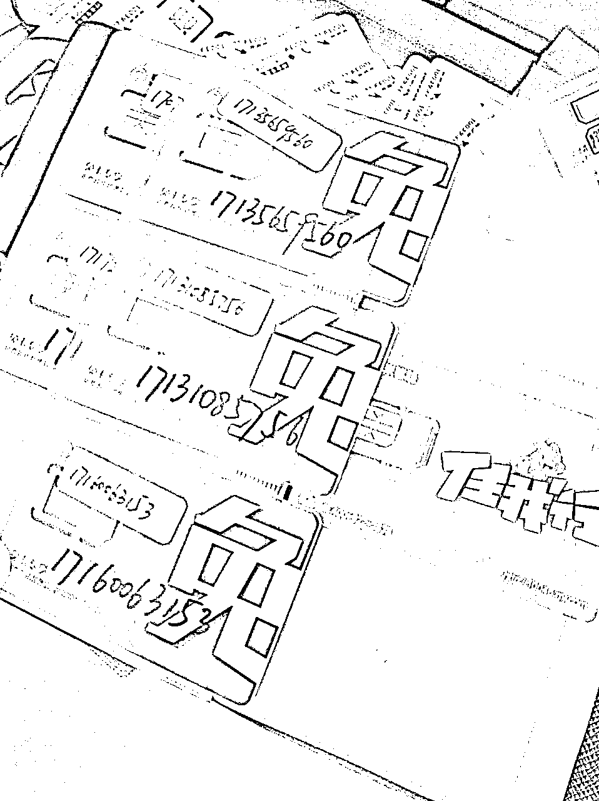
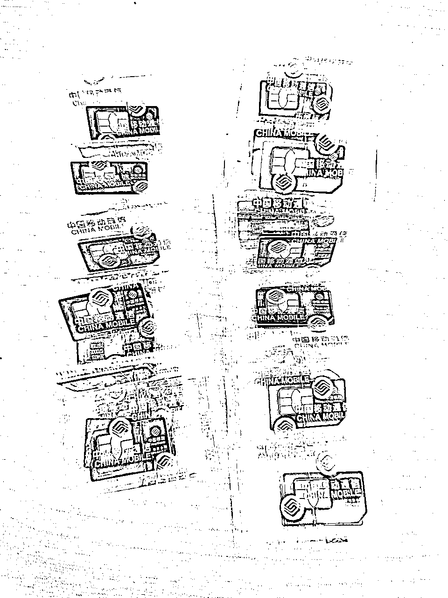
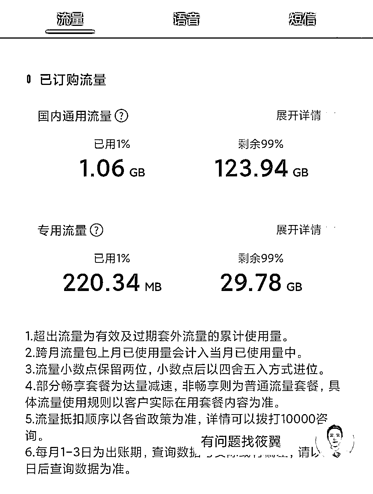

来源：https://ed1jj3yw3i.feishu.cn/docx/MxFgdvUiGoiKOUx025LcCmu7nGd
大家好，我是和光同尘，目前在做小红书店铺项目。最近在群里收到一些圈友的反馈，不知道怎么解决手机卡问题，今天给大家一套解决方案，希望对做项目的各位同仁有所帮助！
首先我们都知道，很多项目操作时都要求一机一卡一号，所谓一机一卡一号指的是一个手机、一个手机卡、一个平台账号，手机花钱购买即可，有了手机卡用号码也就能直接注册平台账号，所以难点在于如何解决手机卡的问题。常规的卡相信大家办下来几张都是没有问题的，问题在于常规手机卡不仅价格贵而且套餐内流量很少，而我们做项目往往要求只能用流量，这就造成很多人要花费一笔不菲的费用买流量，尤其刚开始做项目的小伙伴就会显得更吃力。
像手机、手机卡、各类执照、微信账号、公众号、邮箱账号及各平台账号等，我一般称为做互联网项目的基础物料。我建议做互联网项目的小伙伴要根据需求酌情备一些基础物料在手上，以便有合适的机会或好的项目能够快速投产。每个队伍基因不同，项目做起来正常，做不起来也正常，我们要做的就是在合适时机果断出手，稳准狠的拿到结果！
今天我们只说基础物料中的手机卡，也是基础物料中的基础，很多平台账号也是有了手机号码才能注册的，说卡之前我先说说我踩过坑，相信肯定有小伙伴也踩过同样的坑，给大家列举出来希望圈友们再碰到都能够及时避坑！
那年我还是个青涩的少年，刚开始干公司需要注册微信，自然需要办理手机卡，我拿着我的身份证就去了我们当地的营业厅，告诉柜台的小姐姐说我要办理5张手机卡，我公司要用，小姐姐用异样的眼光看着我，说办不了那么多，一通捣鼓又请示经理什么的，结果还是办不了，最后我才知道为了防止电信诈骗各大运营商都限制了办卡数量，当然如果你不嫌麻烦多跑几个地方也能办下来，但是套餐的价格就是官方的价格，没有优惠。
直到现在我朋友圈还有很多人在卖手机卡，当然国内正经卡已经没有了，基本都是香港、东南亚的卡，只能满足某些工作室的某些业务需求。早年间管理还没有那么严格的时候也通过营业厅的朋友买过一些正规卡，基本都是老头老太太去小营业厅办理业务，他们连哄带忽悠用老头的身份办理下来的卡，卡通过别的渠道卖出去，当事人也不知情，这种行为肯定是违法行为，现在已经买不到这种卡了，即使能买到劝大家也不要去买，况且这种卡的套餐也不可控。

刚开始发放虚拟卡牌照的时候着实让人很兴奋，以小米等为首的一批企业发放的卡不仅资费低而且流量多，还不占用实体卡的名额。但是很多平台不认，微信封号最厉害的时候，170/171开头的号基本一封一户口本，各种工作室哀嚎遍野，直至现在很多平台也不认虚拟卡，建议大家注册账号的时候也慎用，尤其是一些关键平台、关键位置的账号。虚拟卡还有个问题就是虚假套餐，很多时候说终身免费的，但是用着用着就会随便找个理由给你注销或者改套餐价格，欠费超过三个月号码就会自动注销，一不小心就是一个坑，小米等大企业也不例外。

所谓物联网卡是只有流量，不能打电话不能发短信的卡，也没有号码。这类卡按照流量套餐资费，一般搞个公众号或小网站就能开卡，不需要实名，运营商不会管。这类卡流量虚标严重，跑路现象也时有发生，跳IP问题也很严重。初始的时候采用的方案是拿低套餐的实体卡注册账号，用流量卡上网，即使这样也经常因为频繁跳IP封号。说实话，到现在我都不知道这种卡的发卡机构是何方神圣，我手上还有百八十张物联网卡，基本也束之高阁了。

作为一个深耕互联网行业多年的老韭菜，业务需求总是有的，以上的几种办卡方式自然也满足不了。通过各种找关系最终对接了电信的大客户经理，办理了一批企业手机卡，一段时间内这种卡都是我司使用的主力手机卡。这种卡一般挂在公司名下，办卡数量不受限制，大客户经理上门办理，想办几张就办几张，所有卡统一套餐，统一账号，充值到哪个卡都行。缺点是同样需要个人身份证实名，套餐价格同样贵且流量少，要发动身边的人去帮忙实名，实名还需要现场人脸识别。这种卡我办理了30张，每个月19元才给2G流量，业务好的时候无所谓，没业务的时候纯纯是赚钱养卡，而且注销只能找业务经理批量注销，卡出问题补办还需要当事人去操作，很麻烦。
除了以上几种办卡方式就没有更好的方式了吗？肯定是有的，不然我还分享个啥，哈哈！通过跟别人交流我发现经常有人能办到那种低月租大流量的卡，一般月租都是19元、29元，流量一般都100多个G，多的甚至能达到200G多，有些还送通话时间，打电话更是只要一毛钱一分钟。深入研究后才知道，现在各大运营商在竞合，每个运营商的客户基本都趋于饱和了，为了客户增长，他们只能通过一些渠道发放低月租大流量的卡，但是这种卡通常不会在本地区发放，因为本地区的客户本来就是自己的盘中餐，所以通过网申我们可以办理到这种大流量、低月租的套餐，但归属地是随机的，大部分卡号也是随机的，好在不影响使用。我通过实测也验证了这个事实，网申办理的卡需要本人实名认证，可以正常登录各大运营商的官方APP，流量、套餐、通话等等都是正常可查的，咨询官方客服也没有问题。

当然办理这种卡也有一些注意事项需要提前跟大家说清楚：
说完以上，我们说一下标题中说到的一些套餐，以下是渠道（一直在更新），所有套餐都更新到了最后两个链接里，圈友们可以根据需要选择合适的办理，点击链接填写信息等收卡就行了。当然操作过程中可能会遇到各种问题，如果解决不了请私信联系我，请备注圈友咨询！
渠道：https://haokawx.lot-ml.com/Product/Index/73153